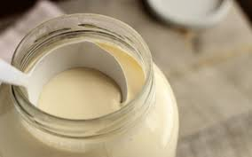
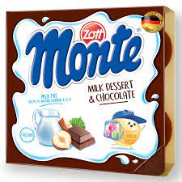
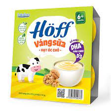
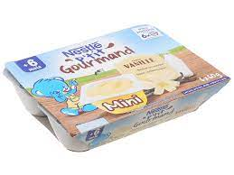
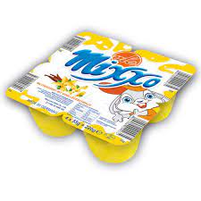
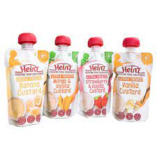
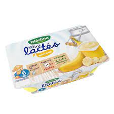

Váng sữa cho bé 6 tháng là thực phẩm dinh dưỡng được nhiều phụ huynh lựa chọn khi con yêu chập chững bước vào giai đoạn ăn dặm. Ngoài việc sở hữu hương vị thơm béo, váng sữa còn chứa hàm lượng dinh dưỡng cao, giúp trẻ nâng cao đề kháng và tăng trưởng khỏe mạnh. Mời ba mẹ cùng TwoDee khám phá và tìm hiểu chi tiết về váng sữa cho trẻ 6 tháng thông qua bài viết dưới đây!
Váng sữa là một chế phẩm từ sữa có hương vị thơm ngậy, ngọt béo đặc trưng. Váng sữa được hình thành từ lớp chất béo (kết thành mảng và nổi lên trên) của sữa khi đun nóng hoặc khi để sữa không đậy nắp trong một thời gian dài. Váng sữa được đánh giá là thực phẩm chứa hàm lượng chất béo cao, vậy nên sau khi được tách ra, người ta thường dùng váng sữa để sản xuất thành các chế phẩm khác như bơ, sữa chua, whipping cream,…
6 tháng tuổi là thời điểm bé bước vào giai đoạn ăn dặm, lúc này bé hoàn toàn có thể sử dụng các dòng váng sữa, sữa chua chuyên dụng cho trẻ nhỏ. Đây là giai đoạn mà hệ tiêu hoá của trẻ đã phát triển toàn diện, vậy nên trẻ sẽ dễ dàng hấp thu dưỡng chất trong váng sữa mà không gây ra những phản ứng tiêu cực như đầy bụng, khó tiêu. Hoàn toàn có thể sử dụng váng sữa cho trẻ 6 tháng tuổi Ba mẹ nên bổ sung váng sữa cho bé 6 tháng tuổi để giúp bé khỏe mạnh và phát triển toàn diện. Nhiều phụ huynh cũng thường thắc mắc rằng: 1 tuần ăn mấy hộp váng sữa là phù hợp với trẻ nhỏ? Điều này còn phụ thuộc vào độ tuổi và khả năng dung nạp ở trẻ. Trong giai đoạn từ 6 – 12 tháng, mẹ có thể cho bé sử dụng ½ đến 1 hộp váng sữa/ngày. Còn với những bé trên 1 tuổi thì có thể ăn từ 1 đến 2 hộp váng sữa mỗi ngày.
Muốn con yêu luôn thông minh và khỏe mạnh, ba mẹ có thể tham khảo các dòng váng sữa dưới đây để bổ sung vào thực đơn hàng ngày của con. Mẹ hoàn toàn yên tâm bởi đây đều là những dòng váng sữa cho bé 6 tháng đáp ứng tốt các tiêu chí: thơm ngon, an toàn và giàu dinh dưỡng…
Váng sữa Monte với hương vị ngọt thơm, béo ngậy là sản phẩm bổ sung dinh dưỡng được nhiều trẻ nhỏ yêu thích. Sản phẩm có tác dụng bổ sung năng lượng và cung cấp dinh dưỡng cho bé hấp thu tốt và phát triển toàn diện về cả thể chất và trí tuệ. Váng sữa Monte được từ sữa nguyên chất (50%) hoà quyện cùng kem sữa hảo hạng chứa nhiều chất béo, mang đến vị thơm béo đặc trưng giúp cung cấp dưỡng chất, tạo dựng nền tảng thể chất vững chắc cho bé.
Váng sữa Hoff là sản phẩm bổ sung dinh dưỡng dành riêng cho trẻ em từ 6 tháng tuổi. Được sản xuất dựa trên nguồn nguyên liệu nhập khẩu cao cấp từ châu Âu, váng sữa Hoff mang đến công thức dinh dưỡng vượt trội giúp trẻ phát triển trí não và tăng chiều cao hiệu quả. Sản phẩm bổ sung nhiều dưỡng chất cần thiết cho nhu cầu hàng ngày của trẻ như: Protein, Vitamin, Canxi, chất xơ,… hỗ trợ bé tăng cường đề kháng, lớn khoẻ tự nhiên.
Với dòng váng sữa cho bé 6 tháng, sản phẩm đến từ thương hiệu Nestle là sự lựa chọn lý tưởng giúp trẻ cải thiện đề kháng một cách hiệu quả. Ngoài ưu điểm giàu chất xơ giúp trẻ tiêu hoá tốt, váng sữa Nestle còn cung cấp 7% năng lượng cần thiết hàng ngày, cho trẻ thỏa sức vui chơi và vận động. Sản phẩm chứa 90% sữa nguyên chất, hoàn toàn không cần bảo quản lạnh, vừa tiện lợi vừa tăng khả năng bảo vệ răng nướu non nớt của trẻ nhỏ.
Váng sữa Mixxo chứa hàm lượng dinh dưỡng đa dạng, có tác dụng bổ sung canxi và nhiều dưỡng chất thiết yếu cho sức khỏe trẻ nhỏ. Sản phẩm có tác động tốt đến hệ tiêu hóa, đóng vai trò quan trọng trong việc tăng cường sự phát triển của xương, hỗ trợ trẻ phát triển khỏe mạnh và toàn diện.
Thành phần chủ đạo của váng sữa Heinz gồm các loại trái cây nghiền như dâu, chuối, xoài giàu vitamin và chất xơ, có tác dụng hỗ trợ hệ tiêu hóa non nớt của trẻ, đồng thời giúp trẻ dễ dàng làm quen với dạng thức ăn mới ngoài sữa. Nhờ độ an toàn và lành tính cao khi không sử dụng chất bảo quản, hương liệu và chất tạo màu, Heinz được đánh giá là dòng váng sữa cho bé 6 tháng được nhiều mẹ Việt tin tưởng ưa chuộng.
Váng sữa Bledina là thực phẩm chứa hàm lượng chất béo cao, có tác dụng hiệu quả trong việc kích thích bé ăn ngon miệng. Sản phẩm phù hợp sử dụng cho những trẻ kém ăn, gầy ốm hoặc có dấu hiệu suy dinh dưỡng. Lượng chất béo lành mạnh có trong 1 hộp váng sữa Bledina chiếm đến 70% tổng năng lượng mà bé cần, vậy nên mẹ có thể dùng thay thế bữa phụ nhằm tạo sự phong phú, đa dạng cho thực đơn hàng ngày của bé.
